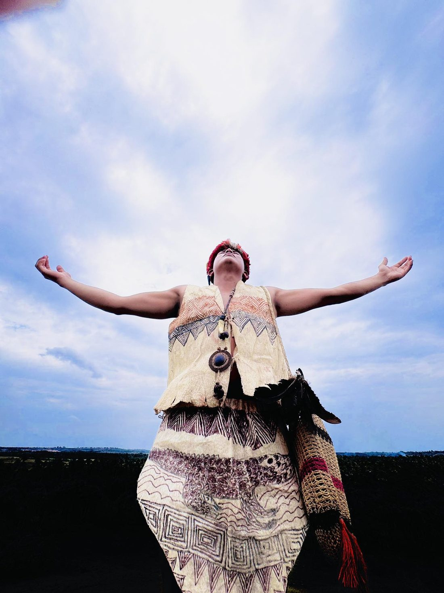
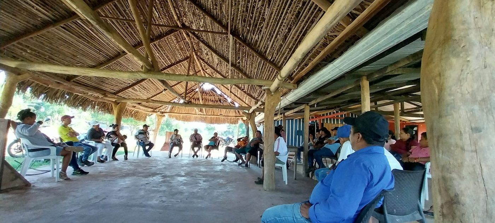
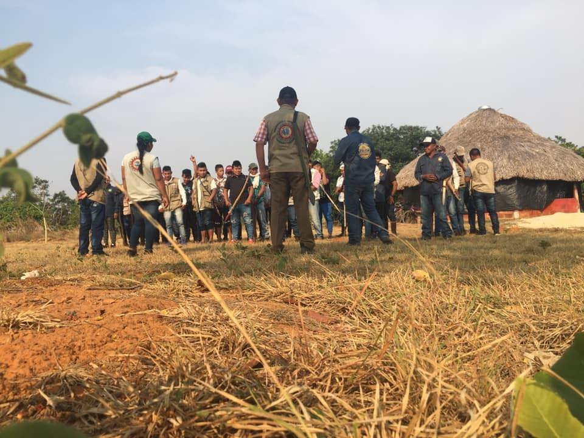
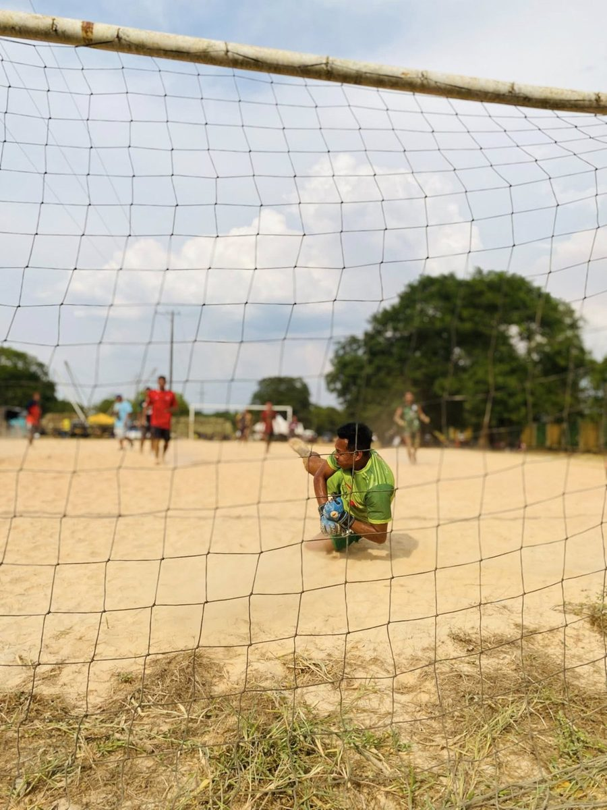
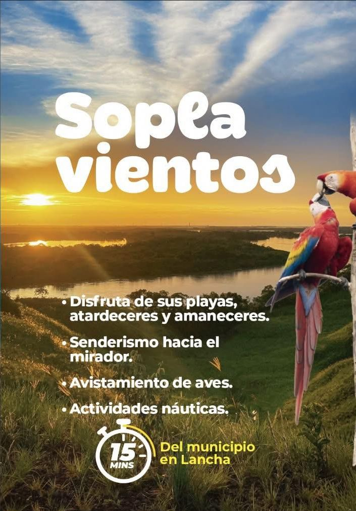
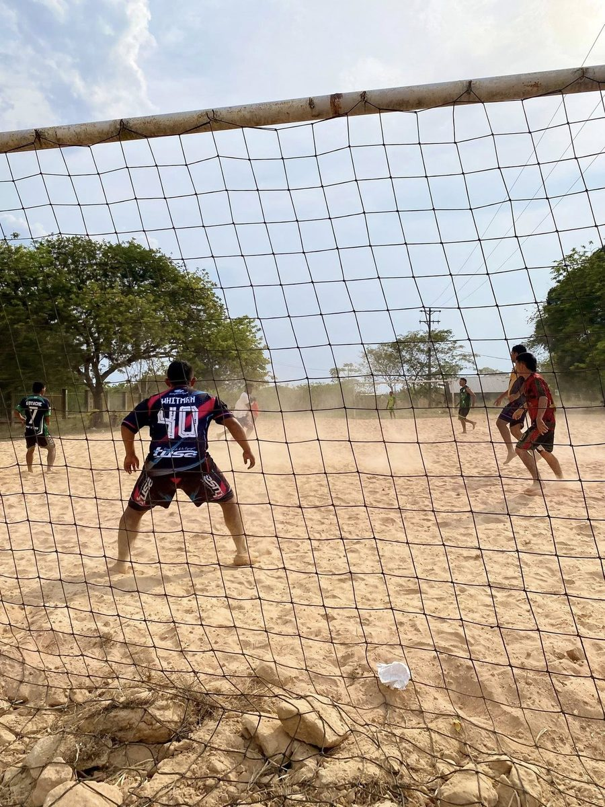
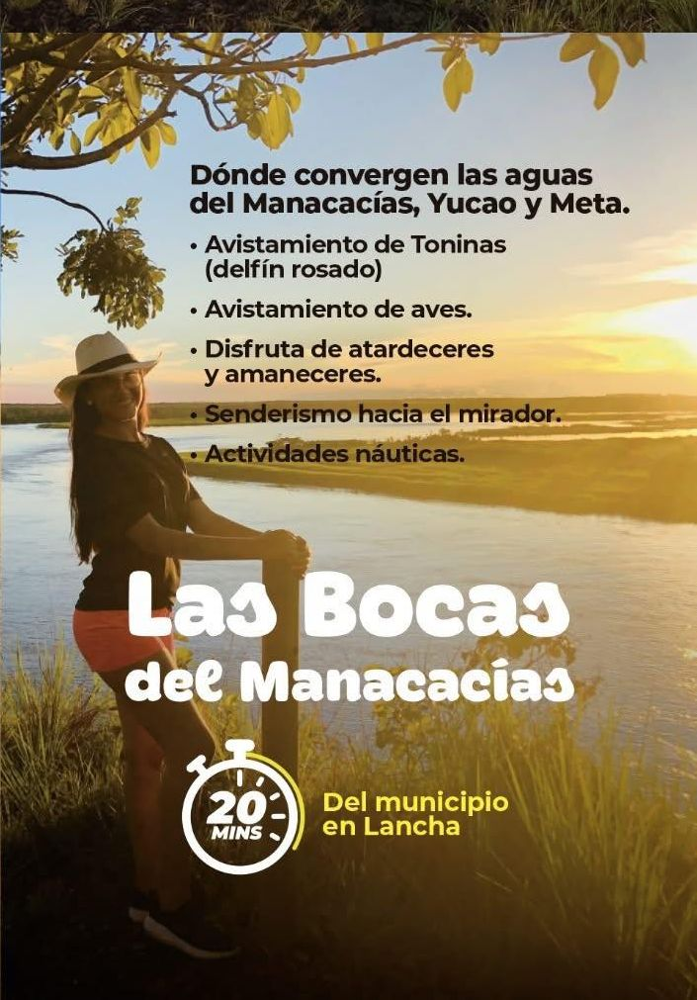
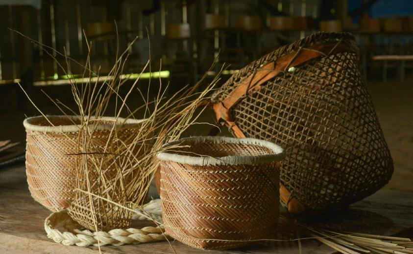
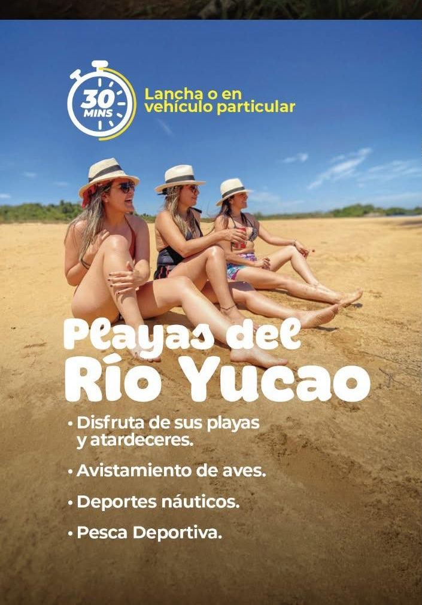
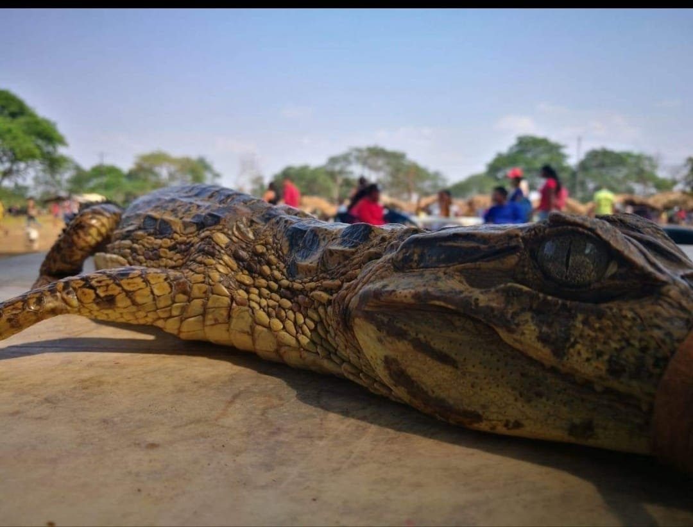

Cultura
01
Identidad viva
La vestimenta, los símbolos y la conexión espiritual con el llano siguen presentes en cada nueva generación.
Tres pilares, un resguardo, miles de vidas en defensa del territorio.
Somos el Resguardo Indígena Corocito Yopalito Wacoyo, comunidad del pueblo Sikuani de los Llanos Orientales de Colombia. Desde 1992 cuidamos nuestra tierra, fortalecemos nuestra cultura y ejercemos nuestra autonomía.

Somos comunidad del pueblo Sikuani, uno de los pueblos originarios de los Llanos Orientales de Colombia. Nuestro resguardo fue constituido legalmente por el INCORA mediante Resolución N° 80 del 18 de diciembre de 1992 en el municipio de Puerto Gaitán, departamento del Meta.
Como autoridad indígena reconocida por el Ministerio del Interior, ejercemos gobierno propio bajo la dirección de un cabildo elegido por nuestra asamblea general. Nuestro horizonte es claro: unidad, cultura y autonomía.
Trabajamos para que cada generación encuentre en Wacoyo no solo un territorio, sino una manera de habitar el mundo: en armonía con la sabana, los ríos, el monte y la palabra de nuestros mayores.
Caminamos juntos como comunidad, fortaleciendo lazos entre familias y generaciones bajo un mismo horizonte.
Honramos la lengua, los saberes ancestrales, las artesanías y las tradiciones del pueblo Sikuani.
Ejercemos gobierno propio y decidimos libremente sobre nuestro territorio, nuestras decisiones y nuestro destino.


Tres dimensiones que tejen la vida del resguardo. Conoce un poco de lo que sucede en Wacoyo cada día.
La vestimenta, los símbolos y la conexión espiritual con el llano siguen presentes en cada nueva generación.

Las canchas de tierra son el corazón social del resguardo. Cada partido es encuentro, alegría y comunidad.

A 15 minutos en lancha, un mirador para atardeceres, avistamiento de aves y actividades náuticas.
Canastos y artesanías hechas con fibras del monte. Cada pieza guarda saberes transmitidos por las abuelas.

El deporte fortalece el tejido social. Los torneos reúnen a comunidades vecinas en sana competencia.

Donde convergen los ríos Manacacías, Yucao y Meta. Avistamiento de toninas (delfín rosado) y aves.

El bohío y la maloca son el espacio donde la palabra circular construye decisiones colectivas.

Atardeceres, deportes náuticos, pesca deportiva y avistamiento de aves a 30 minutos del municipio.

El caimán, el águila, la tonina: animales que tejen nuestra cosmovisión y nos hablan del territorio.
Si eres autoridad pública, organización social, aliado institucional, investigador o visitante respetuoso, escríbenos. La palabra es siempre el primer puente.
Te responderemos al correo institucional del resguardo.